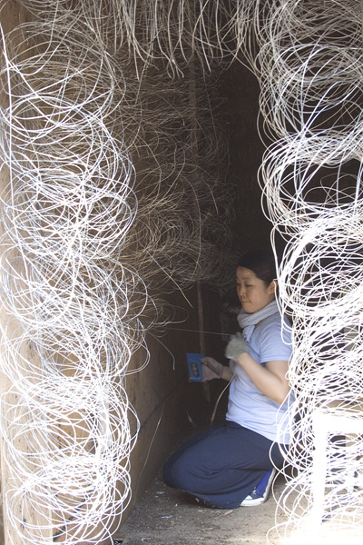

Sumi - working hard in her studio for SAP-TAP Exchange Artist Open Studio
OPENING :
8/28 (Thur) 7 PM
@ studios in Seoksu Market and Stone & Water Gallery
(6:30PM - 2008 Toride Art Project Introduction)
김수미 작가님 - 오픈 스튜디오를 위해 열심히 작업중.
28일 오픈인데 일손이 모자라자 일본 토리데측에서 지원 인원을 보내줄 정도였다.
휴전선의 모습을 형상화하고 있는 작업.
오프닝 :
8/28 (목) 7시 @ 석수시장 이곳저곳 과 스톤앤워터 갤러리
(6:30시에는 2008 토리에 아트 프로젝트를 소개하는 시간이 있습니다.)

photo by Volunteer Sung Baek-Dal / 사진제공 : 자원봉사자 성백달 할아버지
2008-08-26
saptap.egloos.com 에서 옮김